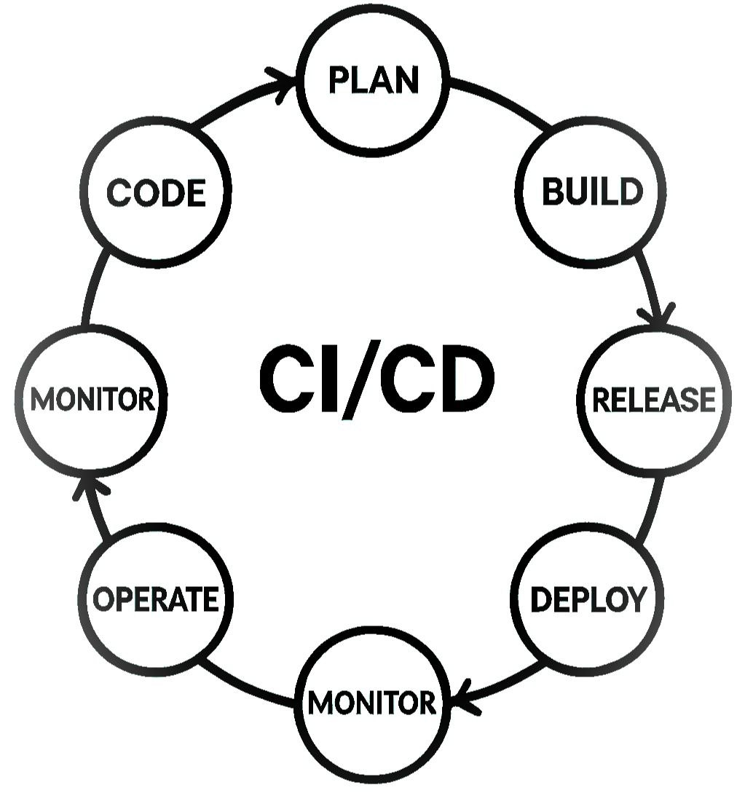

Building a CI/CD Pipeline from Scratch
A step-by-step guide to setting up a complete continuous integration and deployment pipeline using GitHub Actions and Docker.
Introduction
In today's fast-paced development environment, Continuous Integration and Continuous Deployment (CI/CD) pipelines are essential for delivering high-quality software quickly. This guide will walk you through setting up a complete pipeline that automatically tests, builds, and deploys your code.
Prerequisites
- A GitHub account
- Docker installed locally
- Basic understanding of Git, YAML, and Docker
Step 1: Setting Up the Project
We'll use a Node.js application as an example, but this approach works for any language:
Project Structure
my-ci-cd-app/
├── src/
│ └── index.js # Simple Express server
├── test/
│ └── app.test.js # Jest tests
├── Dockerfile # Docker configuration
├── .github/workflows/
│ └── ci-cd.yml # GitHub Actions workflow
├── package.json # Node.js dependencies
└── README.mdExample index.js
const express = require('express');
const app = express();
const PORT = process.env.PORT || 3000;
app.get('/', (req, res) => {
res.send('Hello, CI/CD Pipeline!');
});
app.listen(PORT, () => {
console.log(`Server running on port ${PORT}`);
});Example Test File
const request = require('supertest');
const app = require('../src/index');
describe('GET /', () => {
it('responds with Hello, CI/CD Pipeline!', async () => {
const response = await request(app).get('/');
expect(response.statusCode).toBe(200);
expect(response.text).toBe('Hello, CI/CD Pipeline!');
});
});Step 2: Dockerizing the Application
Create a Dockerfile in your project root:
# Use official Node.js image
FROM node:18-alpine
# Set working directory
WORKDIR /app
# Copy package files
COPY package*.json ./
# Install dependencies
RUN npm install
# Copy source code
COPY . .
# Run tests (optional, can be done in CI)
RUN npm test
# Expose port
EXPOSE 3000
# Start the app
CMD ["node", "src/index.js"]Testing Locally
docker build -t my-ci-cd-app .
docker run -p 3000:3000 my-ci-cd-app
Step 3: Setting Up GitHub Actions
Create .github/workflows/ci-cd.yml:
name: CI/CD Pipeline
on:
push:
branches: [ "main" ]
pull_request:
branches: [ "main" ]
jobs:
test:
runs-on: ubuntu-latest
steps:
- uses: actions/checkout@v3
- uses: actions/setup-node@v3
with:
node-version: 18
- run: npm install
- run: npm test
build-and-push:
needs: test
runs-on: ubuntu-latest
if: github.ref == 'refs/heads/main'
steps:
- uses: actions/checkout@v3
- uses: actions/setup-node@v3
with:
node-version: 18
- run: npm install
- run: docker build -t my-ci-cd-app .
- name: Log in to Docker Hub
uses: docker/login-action@v2
with:
username: ${{ secrets.DOCKER_HUB_USERNAME }}
password: ${{ secrets.DOCKER_HUB_TOKEN }}
- name: Push to Docker Hub
run: |
docker tag my-ci-cd-app ${{ secrets.DOCKER_HUB_USERNAME }}/my-ci-cd-app:latest
docker push ${{ secrets.DOCKER_HUB_USERNAME }}/my-ci-cd-app:latest
deploy:
needs: build-and-push
runs-on: ubuntu-latest
steps:
- name: Deploy to server (example)
run: |
echo "Deployment logic goes here"
# Example: ssh into server and pull the new image
# ssh user@server "docker pull username/my-ci-cd-app && docker-compose up -d"Secrets Configuration
- Go to GitHub Repo → Settings → Secrets → Actions
- Add:
DOCKER_HUB_USERNAME(Your Docker Hub username)DOCKER_HUB_TOKEN(Docker Hub access token)
Step 4: Advanced Deployment Strategies
Option 1: Kubernetes Deployment
- name: Deploy to Kubernetes
run: |
kubectl apply -f k8s-deployment.yamlOption 2: AWS ECS
- name: Deploy to AWS ECS
uses: aws-actions/amazon-ecs-deploy-task-definition@v1
with:
task-definition: task-definition.json
service: my-service
cluster: my-clusterBest Practices
- Keep Builds Fast – Optimize Docker layers and parallelize jobs
- Secure Secrets – Never hardcode credentials
- Rollback Strategy – Ensure you can revert deployments quickly
- Monitoring – Integrate logging (e.g., Prometheus, Datadog)
Conclusion
You've now built a fully automated CI/CD pipeline that:
- Runs tests on every commit
- Builds and pushes Docker images
- Deploys to your infrastructure